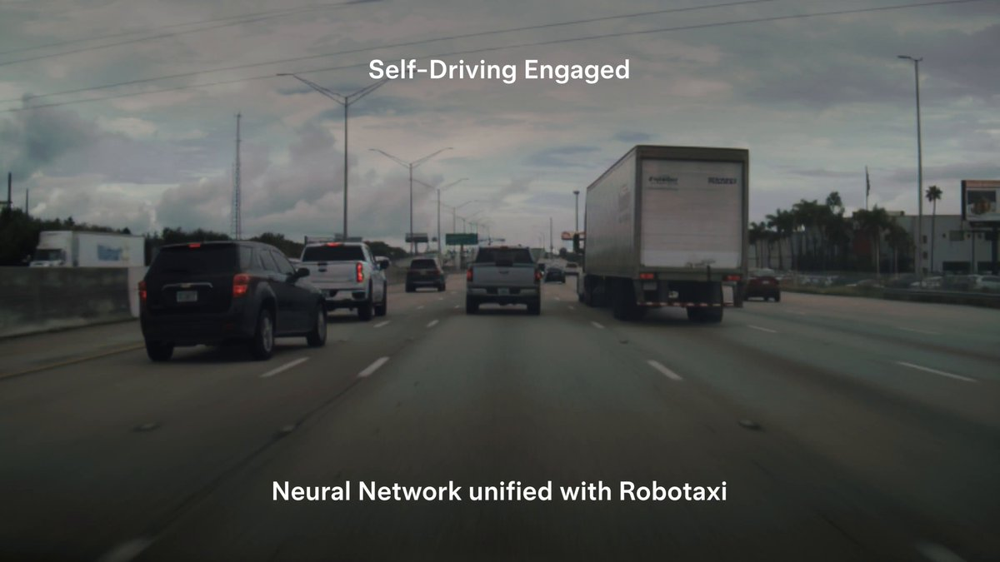
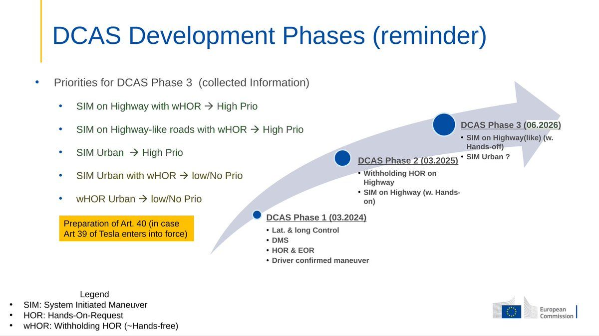
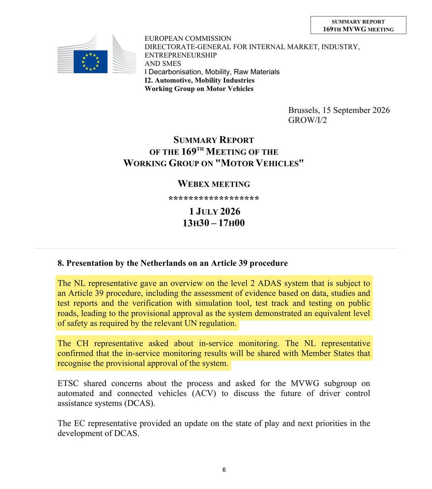

Statens vegvesen har ingen planer om å gi EU innspill om godkjenningen av Tesla Assisted Driving (TAD), tidligere FSD Supervised. Det bekrefter Stein-Helge Mundal i Vegvesenet overfor ITavisen. Han vet heller ikke om etaten deltar på neste møte. Spurt om grunnen svarte han at han anså «det toget for å ha gått». Nå diskuteres ordlyden i dokumentene det skal stemmes over, og Norge har som EØS-land ikke stemmerett. Innflytelsen er «svært begrenset», sier han til ITavisen.
Hvorfor det betyr noe: Mundal har et poeng: Avgjørelsen tas i EU. Likevel er passiviteten påfallende. Så sent som 17. november la Vegvesenet fram tre sikkerhetsinnvendinger, blant annet mot kjøring uten hendene på rattet i tettbygde strøk. Nå tar etaten dem ikke med dit saken avgjøres, og det er uklart hvordan de blir ivaretatt, skriver ITavisen. TCMV, EUs tekniske komité for motorvogner, møtes 15. desember med Tesla-saken på agendaen. Det er ikke bekreftet at det blir avstemning. TAD er fortsatt ikke godkjent for vanlige eiere i Norge.
Tesla Assisted Driving (TAD), tidligere FSD Supervised, står på agendaen når EUs tekniske komité for motorvogner, TCMV, møtes tirsdag 15. desember kl. 10.00–15.00. Det viser utkastet til agenda i EU-kommisjonens offentlige register for komitémøter. Punkt 4, kl. 10.40–11.10, er videre behandling av Kommisjonens utkast til en gjennomføringsbeslutning som gir Nederland lov til å gi EU-typegodkjenning for systemet. Agendaen sier «with possible vote», altså med mulig avstemning. Tipset kom fra FSD_DE og Rustavi på X.
Hvorfor det betyr noe: Mulig avstemning er ikke et lovet ja. Komiteen kan også bare drøfte saken videre, slik den gjorde 6. oktober. Et ja krever 15 av 27 EU-land med minst 65 prosent av befolkningen. Nederland godkjente systemet 10. april, så det har gått åtte måneder når komiteen møtes. Det er tregt, men et unntak fra EU-regelverket krever bred støtte. Et EU-ja gjelder heller ikke automatisk i Norge. Bilforskriften § 3-1 gjør EUs typegodkjenningsregler til norsk forskrift, men Statens vegvesen må følge opp etter EØS-avtalen og har ikke gitt noen tidslinje. TAD er fortsatt ikke godkjent for vanlige eiere i Norge.
EUs tekniske komité for motorvogner, TCMV, møtes tirsdag 15. desember. Det sa en talsperson i EU-kommisjonen til Reuters onsdag. Møtet var opprinnelig satt til 1. desember, ifølge den nederlandske typegodkjenningsmyndigheten RDW. Tidligere onsdag oppga det flamske samferdselsdepartementet i Belgia at møtet var flyttet til mandag 7. desember. Vi publiserte den datoen her. Kommisjonen har senere opplyst at møtet i stedet er 15. desember. Reuters-journalisten Marie Mannes oppdaterte saken kl. 11.46 norsk tid. Kommisjonen har ikke oppgitt noen grunn til utsettelsen. Agendaen er fortsatt ikke publisert. Derfor vet vi fortsatt ikke om komiteen skal stemme over Tesla Assisted Driving (TAD), tidligere FSD Supervised. Saken gjelder om den nederlandske godkjenningen etter artikkel 39, EUs unntaksregel for ny teknologi, skal gjelde i hele EU. I CIRCABC, Kommisjonens dokumentarkiv, heter mappen for det 120. møtet fortsatt «120th meeting on 1 December 2026», altså møte 1. desember 2026. Mappen var tom da vi sjekket den onsdag kl. 11.29. Statens vegvesen skriver fortsatt at neste møte er i desember, men at det ikke er bestemt om det blir avstemning. Siden er sist oppdatert 29. oktober.
Hvorfor det betyr noe: Et ja i TCMV krever kvalifisert flertall: minst 15 av 27 EU-land, og de må til sammen ha minst 65 prosent av EU-befolkningen. I dag har 12 land godkjent TAD på egen hånd. De har rundt 28,6 prosent av befolkningen, ifølge vårt anslag ut fra Eurostat. Det er altså langt igjen til flertall, selv om eierne i alle de 12 landene allerede kjører med systemet. Norge har ingen stemme i TCMV. Som EØS-land venter vi på EU: Statens vegvesen vil følge opp etter EØS-avtalen når EU har avgjort saken. Mens eiere i 12 EU-land bruker systemet hver dag, har Norge valgt å vente på et møte der vi ikke stemmer. Nedtellingen på forsiden går nå mot 15. desember. I nedtellingsmodellen flytter de modellerte datoene seg åtte dager senere enn da vi brukte 7. desember. At komiteen stemmer og sier ja denne dagen, er fortsatt vår antagelse, ikke et vedtak. TAD er fortsatt ikke godkjent for vanlige eiere i Norge.
Oppdatert onsdag ettermiddag: En talsperson i EU-kommisjonen sier til Reuters at TCMV-møtet er utsatt til tirsdag 15. desember. Tidligere onsdag oppga det flamske samferdselsdepartementet 7. desember; den datoen er rettet. Den fulle saken står over. Slik skrev vi i morges: EUs tekniske komité for motorvogner, TCMV, sto da oppført med møte tirsdag 1. desember. Det var da om seks dager. Datoen sto i CIRCABC, Kommisjonens dokumentarkiv. Der ble mappen for det 120. møtet, «120th meeting on 1 December 2026», opprettet 10. november. Mappen var fortsatt tom. Møtet sto også i kalendertjenesten EU Agenda. Onsdag morgen var det ikke publisert noen agenda. Derfor visste vi ikke om komiteen skulle stemme over Tesla Assisted Driving (TAD), tidligere FSD Supervised. Saken gjelder om den nederlandske godkjenningen etter artikkel 39, EUs unntaksregel for ny teknologi, skal gjelde i hele EU. Statens vegvesen skrev fortsatt at neste møte er i desember, men at det ikke er bestemt om det blir avstemning. Siden er sist oppdatert 29. oktober. Agendaen for oktober-møtet kom 25 dager før møtet. Til da hadde vi regnet med et møte rundt 15. desember. I morges telte vi ned mot 1. desember.
Hvorfor det betyr noe: Møtet er senere utsatt til 15. desember, se saken over. Et ja i TCMV krever kvalifisert flertall: minst 15 av 27 EU-land, og de må til sammen ha minst 65 prosent av EU-befolkningen. I dag har 12 land godkjent TAD på egen hånd. De har rundt 28,6 prosent av befolkningen, ifølge vårt anslag ut fra Eurostat. Det er altså langt igjen til flertall, selv om eierne i alle de 12 landene allerede kjører med systemet. Norge har ingen stemme i TCMV. Som EØS-land venter vi på EU: Statens vegvesen vil følge opp etter EØS-avtalen når EU har avgjort saken. Mens eiere i 12 EU-land bruker systemet hver dag, har Norge valgt å vente på et møte der vi ikke stemmer. I morges flyttet vi nedtellingen på forsiden til 1. desember, og de modellerte datoene rundt to uker tidligere. Den tellingen er senere justert. At komiteen stemmer og sier ja, er fortsatt vår antagelse, ikke et vedtak. TAD er fortsatt ikke godkjent for vanlige eiere i Norge.
Tesla Assisted Driving (TAD), tidligere FSD Supervised, er rullet ut til kunder i Italia. Utrullingen startet lørdag 21. november, dagen etter at Tesla Europe meldte at systemet var godkjent. Den italienske youtuberen Giulio Autopilot fortalte i en video samme dag at bilen hans hadde lastet ned programvareversjon 2026.39.100 i løpet av natten. I videoen slår han på TAD i en Model 3 Performance og lar bilen kjøre mot Tesla-senteret i Bologna. Bilen stopper for rødt lys, kjører videre på grønt og tar rundkjøringer mens han følger med. Sporingstjenesten TeslaFi hadde registrert de fem første italienske bilene med versjonen kl. 11.00 norsk tid samme dag, skriver nettstedet TeslAnt. Mandag morgen viser TeslaFi 29 italienske biler med versjonen. Samferdselsdepartementet MIT opplyser i sin pressemelding at bilmyndigheten Motorizzazione formelt anerkjente den nederlandske godkjenningen 19. november, dagen før nyheten ble kjent. Abonnementet koster 99 euro i måneden. Føreren har fortsatt ansvaret og må følge med hele tiden.
Hvorfor det betyr noe: Det gikk to dager fra Motorizzazione sa ja til de første italienske eierne kjørte med systemet. Det er akkurat medianen i landene vi følger. Dermed er TAD i bruk hos vanlige eiere i alle de tolv EU-landene som har godkjent systemet. Italia er det første av de fire folkerikeste EU-landene der eierne faktisk kjører med det. Landet har rundt 59 millioner innbyggere, over ti ganger så mange som i Norge. Mens italienske eiere allerede kjører med systemet, venter norske eiere fortsatt. Statens vegvesen vil vente på EU og ha FN-regulativ 171 oppfylt. Neste mulighet for et ja i TCMV, EUs tekniske komité for motorvogner, er i desember, men møtedatoen er ikke satt. I Norge er TAD fortsatt ikke godkjent for vanlige eiere.
Tesla har begynt å rulle ut FSD (Supervised) v15. Det kunngjorde selskapet selv på X lørdag 21. november kl. 20.24 norsk tid, sammen med en video på 47 sekunder. «FSD v15 now starting to roll out – upgrading every part of the end-to-end driving network», skriver Tesla. På norsk: v15 er i ferd med å rulles ut, og den oppgraderer alle deler av det ende-til-ende-nettverket som styrer kjøringen. Tesla sier ikke hvilke land eller hvilke biler som får oppdateringen først.
Tidligere samme dag, kl. 08.30, skrev Tesla-sjef Elon Musk at v15 skal ut til mange eiere neste måned, altså i desember. «FSD V15 goes to wide release next month. It will be something special.» Nå sier Tesla at starten er i gang. Verken Tesla eller Musk sier om den første bølgen er begrenset, eller om den brede utrullingen fortsatt kommer i desember. Hvilket programvarebygg som følger med, er foreløpig ukjent. Verken Teslascope eller Not a Tesla App viste et v15-bygg da vi sjekket sidene lørdag kveld 21. november. Den nyeste forbrukerversjonen der er fortsatt 2026.44.1, med FSD v14.3.13 for biler med HW4, også kalt AI4, og v14.3 Lite for eldre biler med HW3 i Nord-Amerika. I EU-landene som har sagt ja, kjører eierne en egen europeisk gren: oppdatering 2026.39.100 med FSD-versjon 14.2.2.7, ifølge Not a Tesla App.
Sikkerhet er det Tesla løfter først. Selskapet skriver at v15 gir 25 ganger bedre håndtering av sikkerhetskritiske situasjoner. I merknadene fra kontoen Tesla Super Intelligence (@TeslaSI) knyttes tallet til en oppgradert bildekoder som deles mellom FSD, Robotaxi og Optimus, og som er trent på millioner av videoer fra internett. Tallet kommer fra Tesla, ikke fra en uavhengig test. FSD v15 får også Tesla Reality View, en visualisering i sanntid som viser hva FSD planlegger å gjøre, og som lar deg styre det. Navigasjonen i starten og slutten av turen lærer nå ende til ende av rutevalgene i flåten, skriver Tesla. Senere v15-utgivelser skal utvide dette til hele ruten. Du skal merke bedre oppdagelse av skilt, dyr, rusk i veibanen, veihull og stillestående vann, og mer naturlig fartshåndtering i skolesoner og dårlig vær, ifølge Tesla. FSD kan nå senke farten for fotobokser. En ny sykkelstativmodus, Bike Rack Mode, gjør det mulig å bruke FSD med sykkelstativ eller lignende utstyr på tilhengerfestet. FSD (Supervised) er fortsatt et førerstøttesystem på nivå 2. Føreren har ansvaret og må følge med hele tiden.

Hvorfor det betyr noe: Nyheten viser hvor fort systemet blir bedre – og hvor lenge norske eiere fortsatt må vente. FSD Supervised, i Europa kalt Tesla Assisted Driving (TAD), er fortsatt ikke godkjent for vanlige eiere i Norge. Tolv av 27 EU-land har allerede sagt ja, og dekker rundt 28,6 prosent av EUs befolkning. Neste mulighet for et ja i TCMV, EUs tekniske komité for motorvogner, er i desember. Møtedatoen er ikke satt, og det er ikke kjent om det blir avstemning. Siste møte, 6. oktober, endte uten avstemning. Statens vegvesen er i dialog med Tesla, men har fortsatt tre forbehold: hender av rattet i tettbygde strøk, fartsmarginen på 10 prosent, og hvordan Contextual Speed Adaptation, systemets fartstilpasning etter omgivelsene, virker når trafikken rundt kjører fortere enn fartsgrensen. Vegvesenet har et poeng i at systemet må være trygt på norske veier. Men RDW, den nederlandske godkjenningsmyndigheten, har vurdert virkningen på trafikksikkerheten som marginalt positiv, ifølge Vegvesenets egen side, og Tesla har endret systemet flere ganger etter krav fra myndighetene. Vår vurdering er at v15 trolig må vurderes av RDW før den kan rulles ut i Europa. Det er en vurdering, ikke en opplysning fra Tesla eller myndighetene. Nedtellingen vår anslår at norske eiere tidligst får systemet i slutten av april 2027 og senest i august 2028. Det er et modellanslag med lav sikkerhet.
EU-kommisjonen har forberedt seg på hva som skal skje etter et eventuelt EU-ja til Tesla Assisted Driving (TAD), tidligere FSD Supervised. Det går fram av et lysbilde fra møtet i Kommisjonens ekspertgruppe for motorvogner (MVWG) 1. juli. I en gul boks står det: «Preparation of Art. 40 (in case Art 39 of Tesla enters into force)». På norsk: forberedelse av artikkel 40, i tilfelle Tesla-godkjenningen etter artikkel 39 trer i kraft. Saken er ikke ny i dag. Lysbildet er fra juli, og referatet fra møtet er datert 15. september. Den tyske X-kontoen TADWatcherDE omtalte dokumentene lørdag kveld. Vi har hentet dem selv fra CIRCABC, Kommisjonens dokumentarkiv. «In case» betyr beredskap, ikke et løfte. Presentasjonen er laget av Kommisjonens forskningssenter JRC og generaldirektoratet for indre marked og industri (DG GROW). Den har et forbehold om at synspunktene er foreløpige og ikke Kommisjonens endelige standpunkt. Artikkel 40 i EUs typegodkjenningsforordning, (EU) 2018/858, sier hva som skjer etter et ja. Har Kommisjonen gitt tillatelse etter artikkel 39, som er unntaksregelen for ny teknologi, skal den straks sette i gang arbeidet med å tilpasse regelverket til den nye teknologien. Gjelder unntaket en FN-regulering, skal Kommisjonen foreslå endringer i den. For TAD er det UN R171, FN-reguleringen for førerstøttesystemer (DCAS). Når reglene er endret, faller begrensningene i tillatelsen bort. Unntaket blir altså til vanlige regler. Lysbildet viser også prioriteringene Kommisjonen har samlet inn for fase 3 av DCAS-arbeidet, datert juni 2026. Høy prioritet har systeminitierte manøvrer, der bilen selv tar initiativ til for eksempel et feltskifte, på motorvei og motorveilignende veier med hendene fri. Det samme gjelder systeminitierte manøvrer i by med hendene på rattet. Hendene fri i by har lav eller ingen prioritet. I samme presentasjon trekker Kommisjonen likevel fram hendene fri på bygater som et av punktene den må se på etter artikkel 40. I dag tillater R171 det bare på motorvei. Spørsmålet Kommisjonen stiller, er hvordan det påvirker førerens oppmerksomhet.


Hvorfor det betyr noe: Lysbildet viser at Kommisjonen planla for et ja allerede i sommer. Det er ikke et vedtak. Først må EU-landene i TCMV, EUs tekniske komité for motorvogner, stemme over om godkjenningen fra RDW, den nederlandske godkjenningsmyndigheten, skal gjelde i hele EU. Neste mulighet er møtet i desember. Datoen er ikke satt, og det er ikke kjent om det blir avstemning. I referatet forteller Nederland hvordan RDW vurderte systemet: data, studier og testrapporter, kontroll med simuleringsverktøy, på testbane og på offentlig vei. Det endte med en foreløpig godkjenning fordi systemet viste et like høyt sikkerhetsnivå som FN-reguleringen krever. Referatet omtaler et førerstøttesystem på nivå 2 og nevner ikke Tesla ved navn. Det er lysbildet som gjør det. Sveits spurte hvordan systemet følges opp i bruk. Nederland svarte at resultatene deles med landene som godtar godkjenningen. Trafikksikkerhetsorganisasjonen ETSC (European Transport Safety Council) var bekymret for prosessen. ETSC ba MVWGs undergruppe for automatiserte og tilkoblede kjøretøy drøfte framtiden for denne typen førerstøtte. Motsvaret står i samme referat: Godkjenningen bygger på data, simulering og testing på bane og vei, og erfaringene fra bruk deles med landene. I presentasjonen viser JRC også til egne forsøk på testbane. Der var sannsynligheten for kollisjon i kritiske situasjoner vesentlig lavere med førerstøtte enn ved manuell kjøring. Forsøkene gjaldt lignende nivå 2-systemer, ikke TAD spesielt. For Norge er artikkel 40 godt nytt på sikt. Forordning 2018/858 gjelder som norsk forskrift gjennom bilforskriften § 3-1. Statens vegvesen har sagt at etaten vil følge opp etter EØS-avtalen når EU har avgjort saken. Blir systemet en del av de vanlige EU-reglene, er det ikke lenger et unntak Norge må ta stilling til. Det er vår vurdering. Det er likevel et tankekors at Brussel planlegger steg to mens norske eiere fortsatt venter på steg én. Men rekkefølgen følger loven: først unntak, så varige regler. TAD er fortsatt ikke godkjent for vanlige eiere i Norge.
Elon Musk sier at FSD v15 skal ut til mange eiere i desember. Når Tesla Assisted Driving (TAD), tidligere FSD Supervised, en dag blir godkjent i Norge, kan det være v15 eller en enda nyere versjon norske eiere får. Det er vår vurdering. Foreløpig er ingenting bekreftet om v15 i Europa. «FSD V15 goes to wide release next month. It will be something special», skrev Tesla-sjefen på X lørdag 21. november kl. 08.30 norsk tid. På norsk: v15 skal ut til mange eiere neste måned, og den blir «noe spesielt». Musk sa ikke hvilke land eller hvilke biler det gjelder. Tesla har ikke gitt noen dato, så desember er foreløpig Musks egen tidsplan. I samme innlegg skriver Musk at Teslas KI trenes uten SFT og uten systemprompt. SFT, supervised fine-tuning, betyr at en ferdig KI-modell justeres i etterkant med utvalgte eksempler. Ifølge Musk ligner det mer på «å klippe håret med motorsag» enn på finjustering. En systemprompt er faste instrukser som styrer en modell. Det kaller Musk «tåpelig». Han mener modellen bør oppføre seg fornuftig av seg selv. Et par timer tidligere, kl. 06.02, hadde Tesla-kontoen Tesla Super Intelligence (@TeslaSI) lagt ut et innlegg med to bokstaver: «XV». Det er romertallet for 15. Ashok Elluswamy, som leder KI-arbeidet i Tesla ifølge sin egen X-profil, delte innlegget med samme tekst. Teslas hovedkonto delte det også, med teksten «What if we are just driving in a video game» («Hva om vi bare kjører i et dataspill»). Ingen av innleggene nevner FSD med ord, men det ligger nær å lese «XV» som et hint om v15. I Nord-Amerika er den nyeste versjonen nå FSD (Supervised) v14.3.13 for biler med HW4 og v14.3 Lite for eldre biler med HW3. Begge følger med programvareoppdatering 2026.44.1, som kom 17. november, ifølge nettstedet Not a Tesla App. I EU-landene som har sagt ja, kjører eierne en egen europeisk gren. Oppdatering 2026.39.100 fra 11. november har FSD-versjon 14.2.2.7, ifølge Not a Tesla App. Den har med endringene som RDW, den nederlandske godkjenningsmyndigheten, godkjente 3. november: det nye navnet og en fartsmargin på høyst 10 prosent over fartsgrensen. Den europeiske grenen ligger altså bak den nordamerikanske. Musk har flere planer for desember. Mandag 16. november svarte han en Uber-sjåfør i Austin i Texas at prøver der eiere lar sine egne biler kjøre som robotaxi, kan starte neste måned hvis alt går bra. Det sier ingenting om Europa.
Hvorfor det betyr noe: Godkjenningen i Europa gjelder ikke FSD i sin alminnelighet, men systemet RDW har vurdert. Når Tesla endrer det, ber selskapet RDW vurdere endringene. Det har skjedd to ganger i november. Mandag 16. november godkjente RDW en ny runde som en utvidelse av den eksisterende typegodkjenningen og nevnte også «generelle forbedringer i modellen». Verken Tesla eller RDW har sagt om v15 skal til Europa, når det i så fall skjer, eller om den nye versjonen må gjennom samme behandling. Vår vurdering er at v15 trolig må vurderes av RDW før den kan rulles ut her. Det er en vurdering, ikke en opplysning fra Tesla eller myndighetene. I Norge er TAD fortsatt ikke godkjent for vanlige eiere. Statens vegvesen skriver at etaten vil følge opp etter EØS-avtalen når EU har avgjort saken. Neste mulighet for et ja i TCMV, EUs tekniske komité for motorvogner, er i desember. Møtedatoen er ikke satt, og det er ikke bestemt om det blir avstemning. Tolv av 27 EU-land har allerede sagt ja. Nedtellingen vår anslår at norske eiere tidligst får systemet i slutten av april 2027 og senest i august 2028. Det er et modellanslag med lav sikkerhet. Tar det så lang tid, er det godt mulig at v15 eller en enda nyere versjon blir den første norske eiere får prøve. Det forutsetter at Tesla får versjonen godkjent i Europa først, og ingen vet ennå hvor fort det går. Vegvesenet har et poeng i at systemet må være trygt på norske veier. Men RDW har vurdert virkningen på trafikksikkerheten som marginalt positiv, ifølge Vegvesenets egen side, og Tesla har endret systemet flere ganger etter krav fra myndighetene. Føreren har fortsatt ansvaret og må følge med hele tiden. Mens Norge venter på EU, fortsetter Tesla å utvikle programvaren.
Italia har godkjent Tesla Assisted Driving (TAD), tidligere FSD Supervised, ifølge Tesla. «Now approved in Italy» («Nå godkjent i Italia»), skrev Tesla Europe på X fredag 20. november kl. 11.21 norsk tid. Utrullingen begynner snart, står det i innlegget. Innlegget åpner med «Mamma, butta la pasta», bokstavelig «Mamma, sett på pastaen». Senere fredag bekreftet visepremier og samferdselsminister Matteo Salvini på X at samferdselsdepartementet, Ministero delle Infrastrutture e dei Trasporti (MIT), har gitt en foreløpig nasjonal godkjenning etter en grundig teknisk vurdering. Italia venter dermed ikke på EU. Abonnementet koster 99 euro i måneden, melder Corriere della Sera og nyhetsbyrået AFP. Tesla har ikke oppgitt noen utrullingsdato. Søknaden har ligget hos MIT siden juli. Tesla ba da om at den nederlandske godkjenningen også skulle gjelde i Italia. Det skrev det italienske nettstedet Teslers.it 13. juli, etter at en generaldirektør i departementet hadde bekreftet søknaden overfor en Tesla-eier. Salvini sa 29. oktober at Italia støtter en rask EU-godkjenning. Føreren har fortsatt ansvaret og må følge med hele tiden.
Hvorfor det betyr noe: Italia har nesten 59 millioner innbyggere, om lag 13 % av EU-befolkningen. Landet er det første av de fire folkerikeste EU-landene som sier ja. Tyskland, Frankrike og Spania venter på EU. Det største landet som hadde sagt ja før Italia, var Nederland, med 18 millioner. Regner vi med Italia, har tolv av 27 EU-land godkjent systemet. De har om lag 28,6 % av EU-befolkningen, ifølge vårt anslag ut fra Eurostat-tall. Andelen er nesten doblet på én dag. Et ja i TCMV, EUs tekniske komité for motorvogner, krever 15 land og 65 % av befolkningen, og der veier Italias stemme tungt. Neste mulighet er i desember, men møtedatoen er ikke satt. Norge venter fortsatt. Statens vegvesen vurderer ingen tidligere innføring så lenge systemet ikke oppfyller FN-regulativ 171, og venter på EU. Etaten har et poeng i at systemet må være trygt på norske veier. Men stadig flere myndigheter har vurdert det samme systemet og sagt ja, og nå er et av EUs største land blant dem. I Norge er TAD fortsatt ikke godkjent for vanlige eiere.
Ungarn skal teste Tesla Assisted Driving (TAD), tidligere FSD Supervised, på egne veier uten å vente på EU. Det kunngjorde Zoltán Tanács, minister for vitenskap og teknologi, i en video på Facebook søndag 15. november. Et offisielt testprogram i regi av myndighetene skal vise om systemet kjører trygt og følger de ungarske trafikkreglene. Beslutningen kom etter et møte med Dávid Vitézy, som leder departementet for samferdsel og investeringer, og fagfolkene hans. Startdatoen er ikke kjent. Testprogrammet er ikke en godkjenning, og ungarske eiere kan ikke bruke systemet ennå. I sommer var linjen i Budapest at Ungarn skulle vente på avstemningen i EU.
Hvorfor det betyr noe: Ungarn er nok et land som går fra å vente på EU til å handle selv. Tsjekkia og Kroatia sa også først at de ville vente, og sa ja noen uker eller måneder senere. Nedtellingen vår flytter derfor Ungarn fra mai 2027 til 3. januar 2027. Det er et modellanslag med lav sikkerhet, ikke en dato fra ungarske myndigheter. Elleve EU-land har allerede anerkjent den nederlandske godkjenningen, og RDW, den nederlandske godkjenningsmyndigheten, har vurdert virkningen på trafikksikkerheten som marginalt positiv. Norge står stille. Statens vegvesen vurderer ingen tidligere innføring så lenge systemet ikke oppfyller FN-regulativ 171, og venter på EU. Neste mulighet for et ja i TCMV, EUs tekniske komité for motorvogner, er i desember, men møtedatoen er ikke satt. I Norge er TAD fortsatt ikke godkjent for vanlige eiere.
Statens vegvesen vil ikke framskynde Tesla Assisted Driving (TAD), tidligere FSD Supervised, selv om Finland sa ja 10. november. Det sier fagansvarlig Stein-Helge Mundal til IT-avisen tirsdag kveld. Han peker på tre punkter som ikke er avklart. Vegvesenet har fortsatt spørsmål om kjøring uten hendene på rattet i tettbygde strøk, der det ferdes mange fotgjengere og syklister. Etaten er også skeptisk til at føreren kan stille inn en fartsmargin på 10 prosent over grensen. I tillegg vil den vite mer om hvordan funksjonen Contextual Speed Adaptation påvirker farten når trafikken rundt kjører fortere enn tillatt. Ifølge IT-avisen viser Mundal også til at en langt større andel av Tesla-bilene i Norge kan bruke systemet enn i Finland, og at et norsk ja derfor kan få mye større følger. Finlands argument om å la eierne bli kjent med systemet før den verste vinteren biter ikke på ham. «Vår oppgave er å sikre at systemet er trygt å bruke på våre veier, uavhengig av årstid», sier han. Tesla får ros for navnebyttet, som ifølge Mundal gjør det tydeligere at dette er førerstøtte og ikke selvkjøring.
Hvorfor det betyr noe: Det nye er at Vegvesenet svarer direkte på hvorfor Norge ikke gjør som Finland. Den norske linjen står likevel fast. Etatens egen nettside, sist oppdatert 29. oktober, sier at Norge ikke vurderer noen tidligere innføring så lenge FN-regulativ 171 ikke er oppfylt. Argumentet om mange kompatible biler kan også snus: Flere biler betyr at flere norske eiere går glipp av et system som finske Traficom mener har stort potensial til å redusere ulykker som skyldes menneskelige feil. RDW, den nederlandske godkjenningsmyndigheten, har vurdert virkningen på trafikksikkerheten som marginalt positiv, ifølge Vegvesenets egen side. Tesla har dessuten rettet seg etter flere krav. Fartsmarginen er kuttet fra 50 til 10 prosent, og RDW godkjente 16. november en oppdatering som gjør fartsvalgene tydeligere for føreren. Mundal har et poeng i at føreren må kjenne grensene til systemet. Ansvaret ligger alltid hos føreren. Avgjørelsen ligger uansett i EU. Når TCMV, EUs tekniske komité for motorvogner, har bestemt seg, skal Vegvesenet følge opp etter EØS-avtalen. Neste mulighet for et ja er i desember, men møtedatoen er ikke satt. Elleve EU-land har sagt ja. I Norge er TAD fortsatt ikke godkjent for vanlige eiere.
Den nederlandske godkjenningsmyndigheten RDW har godkjent enda en oppdatering av Tesla Assisted Driving (TAD), som tidligere het FSD Supervised. Det skriver RDW i en nyhetsmelding 16. november, knapt to uker etter forrige runde. Systemet varsler tidligere når føreren ikke følger med, og det kan gi en «full strike», altså en advarsel som teller fullt, hvis føreren er uoppmerksom midt i en manøver. Over 130 km/t må føreren ha hendene på rattet. Også fartsvisningen blir tydeligere. Når systemet bruker den variable fartsfunksjonen Contextual Max Speed, får føreren beskjed, og fartsindikatoren pulserer når systemet unngår å senke farten. Vil føreren ha en høyere toppfart enn systemet foreslår, må det bekreftes med rullehjulet på rattet. Kjører bilen faktisk fortere, blinker fartsgrenseskiltet på skjermen rødt, og gjeldende fartsgrense vises ved siden av farten. I tillegg kommer generelle forbedringer som RDW ikke beskriver nærmere. Oppdateringen gjelder biler med maskinvareversjon 4.0 (HW4) eller nyere og kommer trådløst. Tesla bestemmer selv når.
Hvorfor det betyr noe: RDW testet endringene både på testbane og på vanlig vei og fant ingen negative eller utilsiktede virkninger. Oppdateringen er en utvidelse av den nederlandske typegodkjenningen etter artikkel 39 i EUs rammeforordning 2018/858, unntaksregelen for ny teknologi. Finske Traficom skrev 11. november at Tesla har vært villig til å gjøre endringer som medlemslandene har bedt om. Dette er andre runde på under to uker, og den trekker i riktig retning før TCMV, EUs tekniske komité for motorvogner, skal ta stilling. Neste mulighet for et ja er i desember, men møtedatoen er ikke satt. Elleve EU-land har sagt ja. I Norge er TAD fortsatt ikke godkjent for vanlige eiere, og Statens vegvesen venter på EU.
Tesla Assisted Driving (TAD), tidligere FSD Supervised, er rullet ut til kunder i Latvia, og det skjedde allerede i oktober. Vegtrafikkdirektoratet CSDD anerkjente den nederlandske godkjenningen 26. oktober. Den første dokumentasjonen vi har funnet, er et innslag fra allmennkringkasteren LSM to dager senere. Der sitter Uldis Tēraudkalns, medeier i et uavhengig Tesla-verksted, bak rattet i Riga mens bilen selv svinger, bremser for fotgjengere og parkerer. Ifølge LSM var det da andre dag systemet kunne brukes i Latvia. Dagen etter skrev en latvisk Tesla-eier på X at han hadde fått oppdateringen samme dag og allerede kjørt med den. Fem dager senere skrev han at systemet hadde kjørt ham 350 kilometer. Fredag 13. november la youtuberen Raiders Raitis ut en video på 35 minutter der han tester systemet i en Model X Plaid i trange bakgårder og kryss i Riga. Ifølge CSDD, gjengitt av LSM, har rundt 700 Teslaer i Latvia maskinvaren som trengs. Abonnementet koster 99 euro i måneden, opplyste Tesla til EVwire. Føreren har fortsatt ansvaret og må følge med hele tiden.
Hvorfor det betyr noe: Det gikk to dager fra CSDDs vedtak til systemet var i bruk i Latvia. Det er nøyaktig medianen i landene vi følger. Dermed er TAD i bruk hos vanlige eiere i alle de elleve EU-landene som har sagt ja, blant dem alle de tre baltiske landene. Mens latviske eiere har kjørt med systemet i snart tre uker, venter norske eiere fortsatt. Statens vegvesen vil vente på EU, og neste mulighet for et ja i TCMV, EUs tekniske komité for motorvogner, er i desember, men møtedatoen er ikke satt. I Norge er TAD fortsatt ikke godkjent for vanlige eiere.
Tesla Assisted Driving (TAD), tidligere FSD Supervised, er rullet ut til kunder i Finland. Utrullingen startet 11. november, samme dag som transportetaten Traficom meldte at den hadde anerkjent den nederlandske godkjenningen. Allerede samme kveld la finske eiere ut videoer der bilen styrer, bremser og gir gass mens føreren følger med. Den første eiervideoen vi har funnet, kom på YouTube kl. 20.25 norsk tid: en Model S-eier som viser sin første tur. Litt over en time senere la en Model Y-eier i Rovaniemi ut en tolv minutter lang video fra snødekte veier ved polarsirkelen på X. Natt til 12. november skrev den finske videoskaperen Jami Pietilä at han lastet ned oppdateringen i veikanten og kjørte rett ut. Ifølge avisa Iltalehti koster TAD 99 euro i måneden for nye kunder og 49 euro for eiere med Enhanced Autopilot. Det er gratis for dem som kjøpte hele FSD-pakken. Systemet krever datamaskinen Hardware 4. Føreren har fortsatt ansvaret og må følge med hele tiden.
Hvorfor det betyr noe: Finland er det andre nordiske landet der vanlige eiere bruker systemet, etter Danmark. Det gikk én dag fra Traficoms vedtak til de første bilene på veien. Medianen i landene vi følger, er to dager. Bjørn Nyland har pekt på at veiene og været i Finland ligner på Norge (se saken vår fra 15. november). Nå får finske eiere prøve systemet i snø og mørke før den verste vinteren, slik Traficom ønsket. Mens finske eiere kjører i snøen ved polarsirkelen, må norske eiere vente. Statens vegvesen vil vente på EU og ha FN-regulativ 171 oppfylt. Neste mulighet for et ja i TCMV, EUs tekniske komité for motorvogner, er i desember, men møtedatoen er ikke satt. I Norge er TAD fortsatt ikke godkjent for vanlige eiere.
Den norske Tesla-profilen Bjørn Nyland har lagt ut en video på YouTube der en Tesla Model Y Standard kjører med Tesla Assisted Driving (TAD), tidligere FSD Supervised, i Espoo ved Helsingfors. Videoen kom 15. november, fem dager etter at Finland anerkjente den nederlandske godkjenningen. Turen starter ved Aalto-universitetet og går gjennom forstadsgater og boligområder, med regndråper på frontruta. Føreren holder ikke på rattet, men følger med hele tiden, slik systemet krever. Bilen senker farten for en person på en parkeringsplass og bremser ned til 10 km/t over kraftige fartsdumper der grensen er 30. Den slipper fram en buss som blinker ut, og holder igjen for en hund i bånd. «Vi har ikke måttet gripe inn i noe», sier Nyland underveis (oversatt fra engelsk). Han peker også på noen svakheter. Skjermen viste av og til bare én pil der lyskrysset hadde to, og han mener vindusviskerne gikk sjeldnere enn de fleste førere ville valgt. Bilen leste også et skilt med 10 km/t som hørte til en annen vei, men gikk etter kort tid tilbake til 30.
Hvorfor det betyr noe: Nyland sier at mange nordmenn har pekt på at veiene og været i Finland ligner på Norge. «Hvis Finland kan godkjenne det, er det kanskje på tide at Norge også gjør det», sier han (oversatt). Han tror Norge blir et av de siste landene. Finland ble 10. november det ellevte EU-landet som anerkjente godkjenningen fra RDW, den nederlandske godkjenningsmyndigheten (se saken vår fra 11. november lenger ned). De elleve landene har om lag 15,5 % av EU-befolkningen. RDW godkjente 3. november at fartsmarginen kuttes til 10 prosent, og Statens vegvesen har bekreftet endringen. Vegvesenet venter likevel på EU og vil ha FN-regulativ 171 oppfylt. Neste møte i TCMV, EUs tekniske komité for motorvogner, er i desember. TAD er førerstøtte, og føreren har ansvaret. I Norge er systemet fortsatt ikke godkjent for vanlige eiere.
Statens vegvesen har lagt inn en ny setning på siden om avanserte førerstøttesystemer. Der står det nå at Tesla har justert Tesla Assistert Kjøring, som FSD Supervised heter i Europa, slik at fartstilpasningen kommer nærmere kravene i regelverket. Føreren kan fortsatt stille inn en margin over fartsgrensen, men taket er nå 10 prosent. Tidligere var det 50 prosent. Vegvesenet flyttet ikke datoen «Sist oppdatert», som fortsatt står på 29. oktober. TAD Norge oppdaget den nye teksten 11. november. Det er den samme endringen som den nederlandske godkjenningsmyndigheten RDW godkjente 3. november.
Hvorfor det betyr noe: Fart har vært en av Vegvesenets tyngste innvendinger. Nå skriver etaten selv at Tesla har strammet inn. Samme side sier likevel at Vegvesenet venter bedre tilpasning til fartsgrensene, og at etaten ikke vurderer en norsk innføring før FN-regulativ 171 er oppfylt. Tesla har levert det myndighetene har bedt om: nytt navn, nøkternere markedsføring og lavere fartsmargin. Finland godkjente systemet 10. november som ellevte EU-land. Neste møte i EUs tekniske komité for motorvogner (TCMV) er i desember, men det er ikke bestemt om det blir avstemning. Norge venter fortsatt, og FSD Supervised er ikke godkjent for vanlige eiere her.
Finland har godkjent Teslas førerstøttesystem FSD Supervised, som i Europa nå heter Tesla Assisted Driving. Den finske transportetaten Traficom anerkjente 10. november den foreløpige typegodkjenningen fra RDW, den nederlandske godkjenningsmyndigheten, og meldte det 11. november. Tesla kan dermed straks tilby systemet til kunder i Finland. Traficom begrunner tempoet med endringene Tesla har gjort, og med at finske eiere skal bli kjent med systemet før de vanskeligste vinterforholdene kommer. Navnet er endret, fartsmarginen kan ikke lenger stå på 50 prosent over grensen, og den nullstilles hver gang bilen startes. Ifølge Traficom har førerstøttesystemer stort potensial til å redusere ulykker som skyldes menneskelige feil. Tesla Europe skrev på X kl. 07.18 norsk tid at utrullingen begynner snart, men har ikke oppgitt dato. Føreren har fortsatt ansvaret og må følge med hele tiden.
Hvorfor det betyr noe: Finland er det andre nordiske landet som sier ja, etter Danmark. Elleve av 27 EU-land har nå godkjent systemet. De har om lag 15,5 % av EU-befolkningen, ifølge vårt anslag ut fra Eurostat-tall. Tersklene for et ja i TCMV (EUs tekniske komité for motorvogner) er 15 land og 65 % av befolkningen. Traficom venter at EU avgjør saken i løpet av vinteren, og skriver at et ja i TCMV gjelder i hele EU etter om lag tre uker. Norge har valgt å vente på EU. Dermed kan finske og danske eiere bruke systemet, mens norske eiere fortsatt ikke kan slå det på.
Tesla Assisted Driving (TAD), tidligere FSD Supervised, har vunnet Innovationsprisen ved Årets Bil i Danmark 2027. Prisen ble delt ut av Danske Motorjournalister 10. november i Classic Car House i Kongens Lyngby. De 24 medlemmene i juryen skriver: «Teslas Assisted Driving er markedets mest imponerende kørselsassistent. Det er intuitivt og fungerer forbløffende godt i praksis. Trods fejltrin og en høj pris giver systemet et fascinerende indblik i fremtidens bilkørsel.» Tittelen som Årets Bil gikk til Volkswagen ID. Polo med 197 poeng. De to andre æresprisene gikk til Renault Twingo for design og Cupra Raval for bilglede. Martin Niebuhr i Tesla skriver på LinkedIn at flere tusen danskere har brukt systemet siden godkjenningen i juni, og at det nå er godkjent i 11 europeiske land. At flere tusen har brukt det, er Teslas egen opplysning. Danmark anerkjente den nederlandske godkjenningen 9. juni, og tallet på 11 land stemmer med vår oversikt: 11 av 27 EU-land, etter at Finland anerkjente godkjenningen 10. november.
Hvorfor det betyr noe: Anerkjennelsen kommer fra motorjournalister i et naboland der vanlige eiere allerede kan bruke systemet. Juryen nevner feiltrinn og høy pris, og gir likevel prisen til det den kaller markedets mest imponerende kjøreassistent. Føreren har fortsatt ansvaret. I Norge er Tesla Assisted Driving fortsatt ikke godkjent for vanlige eiere.
Den nederlandske godkjenningsmyndigheten RDW har vurdert og godkjent flere endringer i FSD Supervised, som i Europa heter Tesla Assisted Driving (TAD). Det skriver RDW i en nyhetsmelding 3. november. Det nye navnet skal stå på skjermen i bilen, i instruksjonsboken og i all annen informasjon til føreren. Ifølge RDW endrer navnebyttet ikke hvordan systemet virker. Det er fortsatt et førerstøttesystem, og føreren har fortsatt ansvaret for kjøringen. Den største endringen gjelder fartsmarginen, altså hvor mange prosent systemet kan avvike fra fartsgrensen når det trengs for sikkerheten og trafikkflyten. Føreren kunne tidligere stille den på inntil 50 prosent. Nå blir taket 10 prosent. Når bilen startes, står marginen på null, og andre fartsrelaterte funksjoner er slått av som standard. Endringene gjelder biler med maskinvareversjon 4.0 (HW4) eller nyere og kommer som en trådløs programvareoppdatering fra Tesla. RDW oppgir ingen dato for når oppdateringen kommer.
Hvorfor det betyr noe: Det var Tesla selv som ba RDW vurdere endringene. RDW fant ingen negative eller utilsiktede virkninger og har tatt endringene inn i den eksisterende typegodkjenningen. Den gjelder videre med de samme vilkårene, og RDW har orientert de ni landene som har anerkjent den nederlandske godkjenningen. Antallet land er fortsatt ti. Løpet i Nederland beveger seg, og nå er det opp til EU og Norge å følge etter. Statens vegvesen vil ha FN-regulativ 171 oppfylt uten unntak. RDW kommenterer ikke behandlingen i TCMV, der samtalene er fortrolige. Norge har ikke stemmerett der, og FSD Supervised er fortsatt ikke godkjent for vanlige eiere i Norge.
En norsk Tesla-eier har sendt en formell klage til Statens vegvesen (SVV) på sjefingeniør Stein-Helge Mundal, melder IT-avisen kl. 11.19. Bakgrunnen er en e-postutveksling fra august. Eieren mente at FSD Supervised, som i Europa heter Tesla Assisted Driving, kan redde liv, og at den norske ventingen fører til unødvendige dødsfall. Mundal svarte 25. august blant annet: «Kanskje har vi også spart liv ved å utsette …» I samme svar viste han til NRK-dokumentaren «Kollisjonskurs – Elon Musk og Tesla-eksperimentet». Eieren fortalte om klagen på X 29. oktober. Til IT-avisen sier Mundal at uttalelsen må leses i sammenheng med hele e-postutvekslingen. Han mener systemer som venter til de oppfyller de harmoniserte FN-kravene, gir et høyere sikkerhetsnivå, og frykter at unntakene kan bli regelen. Om klagen sier han: «Dersom det kan bidra til å opplyse saken ytterligere, er det fint.» Mundal opplyser at han er fagansvarlig for regelverket for avanserte førerstøttesystemer og automatisert kjøring, og at SVV arbeider i tverrfaglige team. Avgjørelsene tas altså ikke av ham alene.
Hvorfor det betyr noe: Saken viser hvor fast den norske linjen står. SVV vil ha FN-regulativ 171 oppfylt uten unntak, mens ti land har anerkjent den nederlandske godkjenningen. Mundal har et poeng om at føreren ikke må stole for mye på systemet. Det gjelder all førerstøtte, og føreren har alltid ansvaret. Eierens spørsmål om hva ventingen koster, fortjener like grundig svar. Teslas egne tall, gjengitt av Sawyer Merritt 27. oktober, viser langt flere kilometer mellom store kollisjoner med systemet på enn snittet i USA. Tallene er Teslas egne og gjelder ifølge Merritt Nord-Amerika. Beslutningen ligger uansett i EU. Ifølge IT-avisen er neste TCMV-møte planlagt i desember, men det er ikke sikkert at det blir avstemning. FSD Supervised er fortsatt ikke godkjent for vanlige eiere i Norge.
Laster …
Uoffisiell side. Ingen tilknytning til Tesla, Statens vegvesen eller EU-kommisjonen. Tall og sjanser er skjønn — ikke offisielle vedtak.